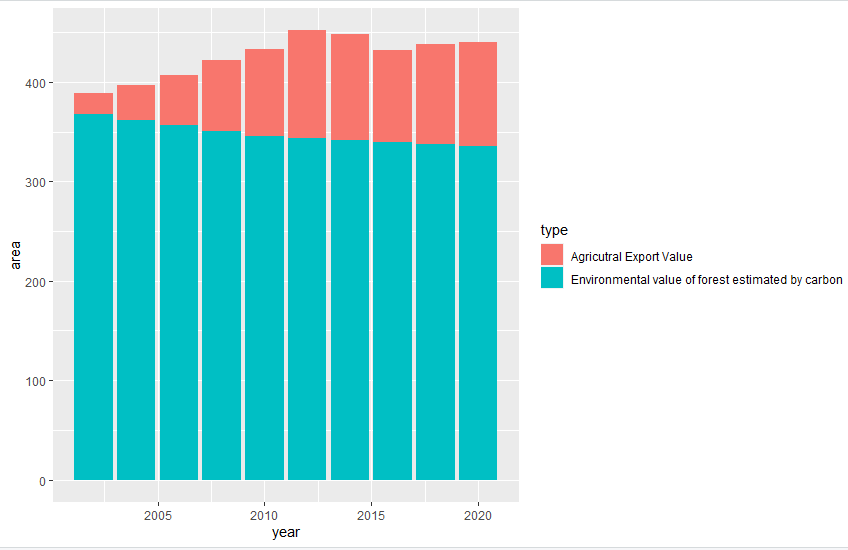
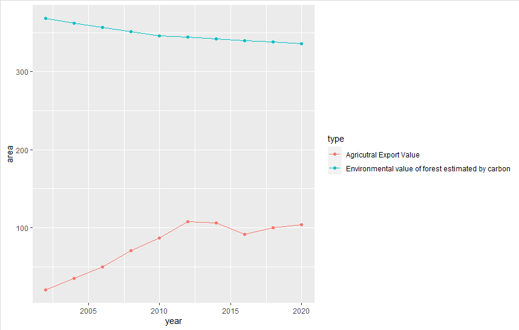

The idea of this project starts with one of our group member actually been to Brazil and realized the deforestation and the problems it brings.
This page is the infographic design project of LSC350Group4 The main theme is discussing how the use of economical crops influence rain forests
We firstly visualized the change of forest and agricultural land of Brazil over the scale of 1o years
 Then we estimated the value generated by rain forests according to the carbon price and also the area of remaining forest. And we compared this value with the crop production value of Brazil. When we combine the three graphs, we can get the idea that although the area of agricultural land is increasing, the crop production's increase is much less stable than the value production of forests. Which means the idea of changing forest to farm lands is not a sustainable idea.
We also included a interactive 3D view since we think the datasets is interelated with each other And also, we inplemented a visual metaphor that the value dataset is the (mirror) of the land area dataset